Game Walkthrough Hub
Welcome to the official DAVUSKI Game Walkthrough page. This section is designed to provide detailed step-by-step guides, gameplay strategies, and mission tips for various action and adventure games. Whether you are stuck on a difficult mission or want to improve your gameplay skills, this guide will help you progress smoothly.
Our walkthrough covers multiple popular games including MC4, Warstrike, Iron Man 2, and Godfather Mob Wars. Each guide is written to help players understand game mechanics, improve combat performance, and complete missions efficiently without confusion.
The purpose of this page is to make gaming easier and more enjoyable by breaking down complex missions into simple, understandable steps. Players can follow the instructions carefully to avoid common mistakes and complete levels faster.
MODERN COMBAT 4: ZERO HOUR WALKTHROUGH

MODERN COMBAT 4: ZERO HOUR is a first-person shooter that centers on a global conflict triggered by a terrorist organization launching a coordinated attack. The story follows elite soldiers trying to stop a full-scale international crisis, with twelve missions set across different countries, combining intense combat, stealth, and cinematic action. MC4 delivers fast-paced FPS action where every mission pushes you deeper into intense battlefield operations. The walkthrough is divided into twelve, each walkthrough per mission.
VIEW FULL WALKTHROUGH 🎮
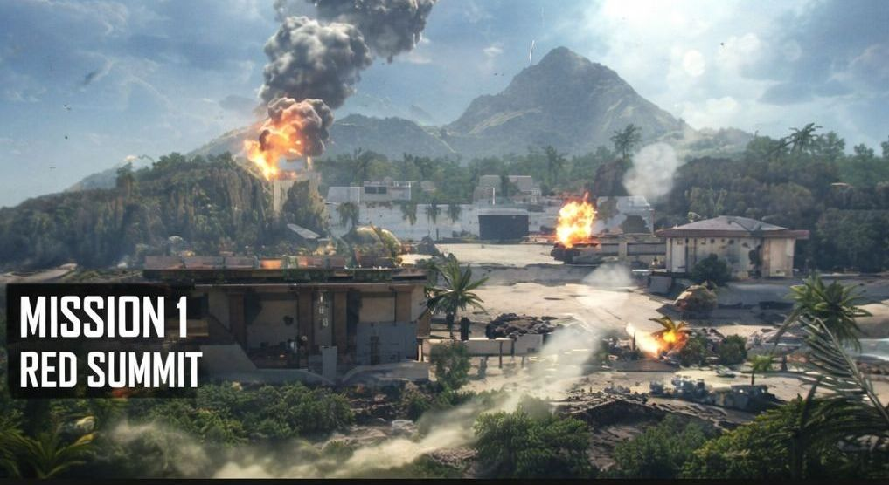
MISSION 1 - RED SUMMIT
INTRODUCTION:
Mission 1:Red Summit begins with a massive terrorist attack. You must survive the ambush, regroup with your squad, and reach the evacuation point.
You start in an area close to a water body with enemies firing from windows and rooftops. Stay in cover and move with your squad. Advance carefully so as to avoid running into open fire. You will later on encounter a mounted machine gun truck. Pick up the grenade launcher and destroy it. Continue forward and eliminate remaining enemies until the helicopter arrives.
TIPS
- Endeavour to always take cover, as this will help reduce hits from bullets.
- Always aim for headshots, makes kills quicker, reduces excessive use of ammo per kill and avoids time wastage.
- Don't forget to reload before advancing.
- Always watch out for grenades from enemies, and be quick to run if thrown at you.
- Use Mission 1 to be familiar with the controls.
- Press the crouch button while running to slide.
- Always observe carefully as the game provides arrows for direction.
- Pay keen attention to your team mates, cause at times they give instructions and aid, as well as information.
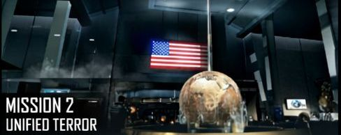
MISSION 2 - UNIFIED TERROR
INTRODUCTION:
Mission 2 moves you from basic training into real combat. Enemy resistance becomes more active, and you’re expected to start applying what you learnt in Mission 1.
The focus is on advancing through controlled firefights, using cover properly, and reacting quickly to enemy threats. It’s not just about shooting anymore, it’s about moving smartly and staying alive while pushing forward through the mission objectives.
Overall, this mission is a transition stage that prepares you for tougher and more intense battles ahead.
TIPS
- Focus on enemies with sniper rifle, they cause a great deal of damage.
- Enemies will take covers, so be careful so you will not run into them unexpectedly.
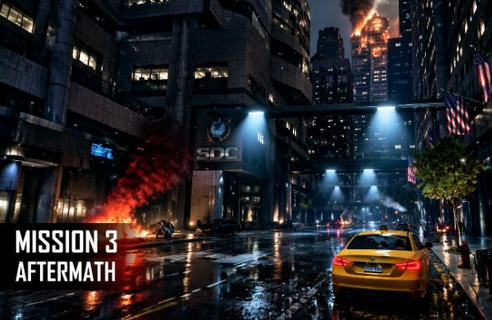
MISSION 3 - AFTERMATH
INTRODUCTION:
You must defend a military base under heavy attack. Use mounted turret to destroy incoming enemies. After the base is breached, fight indoors and hold position until reinforcements arrive. As the mission continues, tighter combat spaces will require controlled shooting and quick reactions. Reload only when safe and keep checking both sides to prevent flanking attacks. Maintain a steady pace, eliminate threats, and reposition until you reach the final section. Finishing this mission successfully depends on patience, awareness, and effective use of cover.
TIPS
- Smartly place turret in open spaces to aid in killing enemies.
- Target vehicles first, as they cause a great deal of damage.
- Remember to use grenades, especially when enemies come in groups.
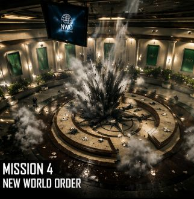
MISSION 4 - NEW WORLD ORDER
INTRODUCTION:
New World Order raises the stakes as the conflict spreads globally, introducing more intense combat scenarios and larger enemy operations.
In this mission, the situation escalates into a global-scale threat as enemy forces tighten control across multiple regions. You engage in coordinated military operations while facing stronger resistance and more advanced enemy units. The mission emphasizes structured advancement, tactical movement, and sustained firefights across different combat zones.
Engage enemies using mid-range and automatic weapons.
TIPS
- Switch weapons quickly based on enemy distance.
- Watch out for ambushes.
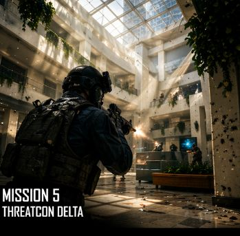
MISSION 5 - THREATCON DELTA
INTRODUCTION:
Threatcon Delta focuses on escalating emergency response scenarios as enemy forces launch coordinated attacks.
This mission revolves around high-alert combat conditions where enemy activity increases rapidly. You are deployed into unstable zones where threats are unpredictable and fast-moving. The mission emphasizes reaction speed, adaptability, and managing multiple combat situations simultaneously as the battlefield becomes more chaotic.
TIPS
- Prioritize high threat targets first.
- Quickly eliminate any enemy spotted with a grenade.
- Do not linger in exposed areas.
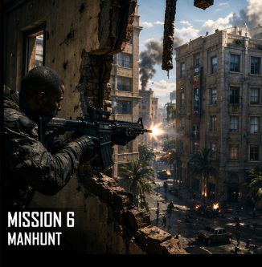
MISSION 6 - MANHUNT
INTRODUCTION:
Manhunt shifts the focus to pursuit and elimination, as you track down high-value enemy target.
In this mission, the gameplay centers around tracking and hunting key enemy operatives. Instead of defending positions, you take an offensive role, moving through enemy territory to locate and eliminate targets. The mission blends stealthy advancement with intense firefights, requiring careful tracking and tactical positioning.
Clear areas before advancing further. Remember sliding is done by tapping the crouch while running, this will help alot. Complete extraction after target elimination.
TIPS
- Always move between cover to avoid unnecessary damage.
- Use sliding effectively, you can also slide into cover during firefights to avoid enemy fire.
- Don’t rush to advance as that can trigger multiple enemies at once.
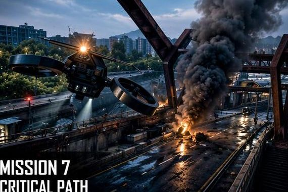
MISSION 7 - CRITICAL PATH
INTRODUCTION:
Critical Path introduces a unique gameplay shift where you control an aerial drone to eliminate enemies protecting Saunders. After the drone sequence, the mission shifts into intense ground combat inside a transport hub. Precision and awareness are key to success.
TIPS
- Scan the area carefully before firing.
- Target grouped enemies first.
- Eliminate guards protecting Saunders.
- Avoid friendly fire on Saunders.
- Destroy vehicles and heavy units early.
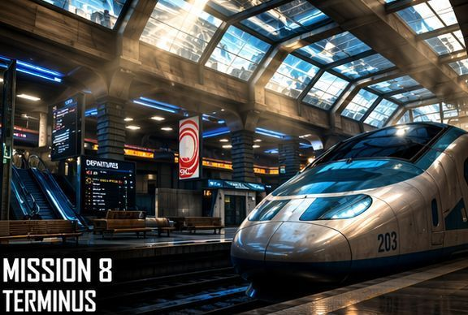
MISSION 8 - TERMINUS
INTRODUCTION:
Terminus continues the chase inside a large transport station filled with enemies positioned behind pillars, platforms, and elevated walkways. The mission focuses on close-quarter combat and careful advancement under heavy fire.
TIPS
- Move slowly between pillars so as to eliminate enemies behind cover.
- Use controlled bursts for accuracy.
- Throw grenades into midst of enemy groups.
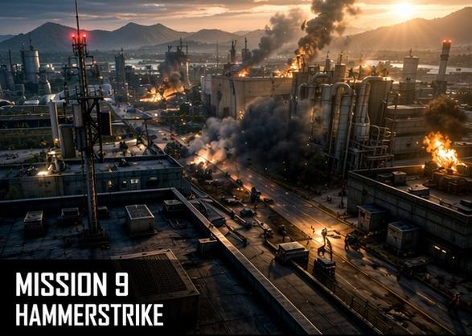
MISSION 9 - HAMMERSTRIKE
INTRODUCTION:
Hammerstrike marks a major escalation in the campaign, shifting into full-scale urban warfare. You fight through heavily defended city zones as the conflict intensifies.
In this mission, you operate in a war-torn urban battlefield where enemy forces have fortified key positions. Armored enemies, mounted guns, and explosives, chaos dominate the environment. The mission focuses on aggressive advancement alongside your squad while breaking through defensive lines and clearing enemy strongholds.
TIPS
- Eliminate armored enemies using high-damage weapons.
- Use LMGs or assault rifles for sustained fire.
- Prioritize turret operators first.
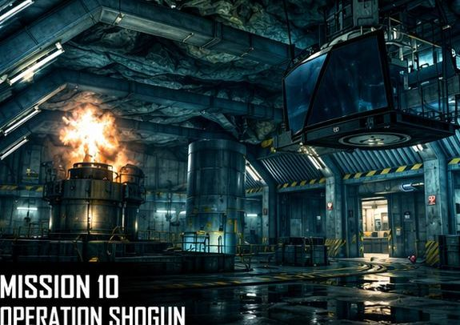
MISSION 10 - OPERATION SHOGUN
INTRODUCTION:
Operation Shogun shifts gameplay into tight indoor combat, emphasizing stealth, timing, and reaction speed. In this mission, you infiltrate a heavily guarded enemy facility filled with narrow corridors, locked rooms, and ambush points. Unlike earlier missions, this one focuses on close-quarter combat and tactical movement. Enemies frequently appear from unexpected angles, making awareness critical as you push deeper into the facility.
TIPS
- Move carefully through corridor-based environments.
- Use flashbangs before room entry.
- Reload often before clearing new areas.
- Aim for headshots in tight spaces.
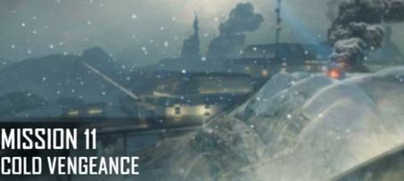
MISSION 11 - COLD VENGEANCE
INTRODUCTION:
Cold Vengeance introduces environmental difficulty with snowy terrain and reduced visibility, set in a harsh winter battlefield, this mission challenges you with long-range threats and limited visibility. Enemy snipers and hidden units take advantage of the snow-covered terrain. You must carefully advance while supporting your squad through multiple enemy waves. The slower pace emphasizes precision and survival.
TIPS
- Identify and eliminate sniper positions early.
- Use scoped weapons for distant enemies.
- Don’t rush open ground.
- Use cover to avoid long-range fire.
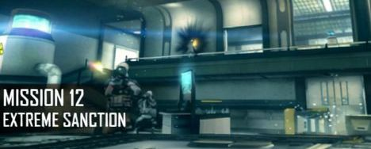
MISSION 12 - EXTREME SANCTION
INTRODUCTION:
Extreme Sanction is the final mission of the campaign, concluding the conflict with high-intensity combat and a dramatic ending.
The final assault begins as you push through heavily defended enemy forces in a last attempt to stop the antagonist. The mission features continuous enemy waves, limited resources, and high-pressure combat scenarios. As you advance, the tension builds toward a final confrontation that concludes the story.
TIPS
- Don’t waste ammo on single targets unnecessarily.
- Prepare for fast reactions in the final sequence.
WARSTRIKE FPS: WHATEVER IT TAKES

WarStrike is an offline first-person shooter that features fast-paced missions, and chapter-based progression. The game focuses on simple controls, weapon upgrades, and quick combat scenarios that can be played without an internet connection. In this walkthrough, you’ll find chapter-by-chapter guides, mission strategies, and helpful tips to complete each stage more easily. Whether you're just starting or trying to finish the final chapter, this guide will help you progress smoothly through the game.
VIEW FULL WALKTHROUGH 🎮
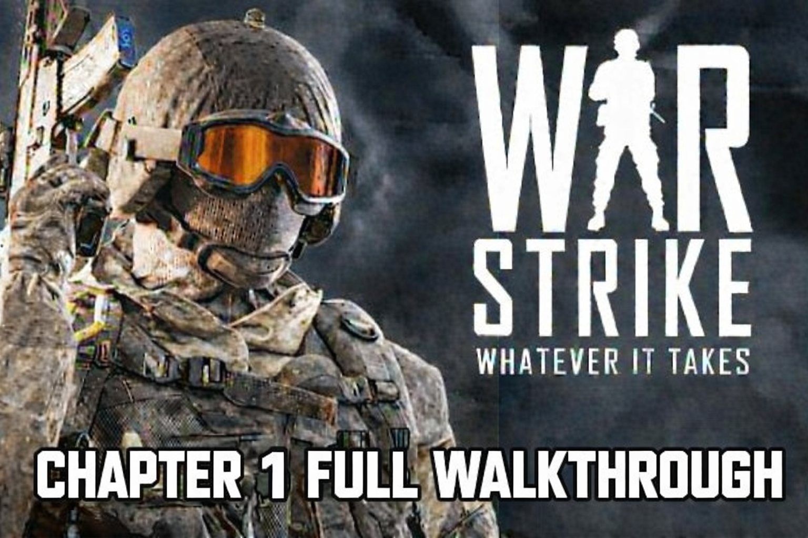
CHAPTER 1 - FULL WALKTHROUGH
INTRODUCTION:
Chapter 1 in WarStrike is basically where everything starts, and it’s designed to ease you into the game without throwing too much at you at once. At this point, the focus is really on getting used to how the game feels, how your character moves, how aiming works, and how combat flows when you actually run into enemies.
The early fights aren’t too difficult, which gives you space to get comfortable with the controls. You can take your time learning how different weapons behave and how your shots feel in actual combat. Instead of rushing you, the game lets you slowly build confidence as you move through the first areas.
As you progress, you start picking up small but important lessons without even realizing it. Things like how to position yourself during fights, when to take cover, and how enemy movement usually works. Nothing is overly complicated here, but it quietly sets the tone for what you’ll need later on.
By the end of the chapter, you’re not just learning controls anymore—you’re starting to understand how the game expects you to think in combat. It’s more of a warm-up phase that prepares you for the tougher missions that come.
TIPS
- Aim for headshots to conserve ammo.
- Use short bursts for accuracy.
- Advance cautiously.
- Aim for headshots for quick kills.
- Don’t rush into open areas.
- Avoid standing in open areas.
- Avoid reloading during combat.
- Avoid ignoring enemy flanks.
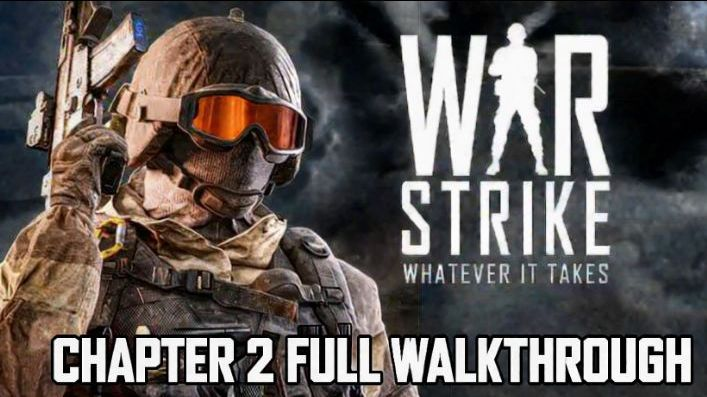
CHAPTER 2 - FULL WALKTHROUGH
INTRODUCTION:
Chapter 2 starts to ramp things up a bit compared to the first chapter. The game doesn’t hold back as much anymore, and you quickly notice that enemies are more aggressive and appear in larger numbers. Fights become more intense, and you can’t just move through areas as casually as before.
At this point, staying alive depends more on how you handle yourself in combat. Where you position yourself matters a lot, because rushing in without thinking usually gets you overwhelmed. You also start to pay more attention to how and when you use your weapons, since different situations call for different approaches.
The enemies put up stronger resistance, so encounters tend to last longer and feel more pressured. You’ll often find yourself adjusting on the fly, switching tactics depending on how the fight is going rather than sticking to one simple pattern.
Overall, Chapter 2 pushes you to be more aware and deliberate in your actions. It’s less about just learning controls now and more about actually applying what you’ve learned under pressure, setting the tone for even tougher challenges ahead.
TIPS
- Move with caution.
- Take out distant enemies first.
- Use grenades for clustered enemies.
- Ensure to always take cover.
- Avoid rampant use ot grenades.
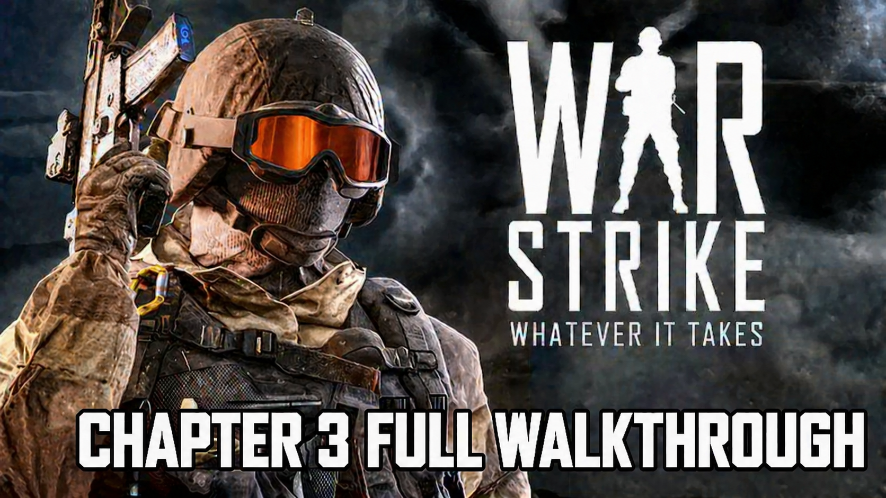
CHAPTER 3 - FULL WALKTHROUGH
INTRODUCTION:
Chapter 3 steps things up even further and makes combat feel a lot more serious and tactical than before. You’re no longer just dealing with basic resistance, enemies become tougher, more organized, and they tend to put up a stronger fight that lasts longer than what you’ve experienced in earlier chapters.
Firefights become more drawn out, which means you can’t rely on rushing through encounters anymore. You need to be more careful with how you approach each situation, because positioning now plays a big role in whether you survive or get overwhelmed. Staying out in the open for too long becomes risky, and you start thinking more about angles, cover, and distance before engaging.
Weapon choice and upgrades also start to matter more here. Stronger enemy units require better accuracy and smarter use of your arsenal, especially when dealing with targets that are harder to take down or positioned far away. You’ll often find yourself adjusting your strategy mid-fight, switching between close and long-range engagements depending on the pressure you’re under.
Overall, Chapter 3 pushes you into a more advanced style of play where survival depends on awareness, precision, and smart decision-making rather than just basic combat skills.
TIPS
- Move slowly into combat zone.
- Use cover effectively.
- Eliminate snipers first.
- Advance with caution.
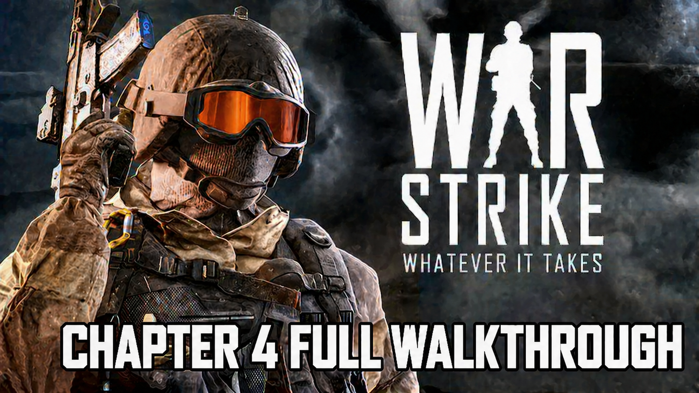
CHAPTER 4 - FULL WALKTHROUGH
INTRODUCTION:
Chapter 4 is where WarStrike reaches its peak intensity, acting as the final stretch of the campaign. Everything you’ve learned up to this point gets tested at once, as the game throws you into some of the most demanding combat encounters so far.
The battles are faster, heavier, and more chaotic, with multiple waves of enemies pushing in from different directions. You’re constantly under pressure, and there’s very little room for mistakes. Stronger enemy units also appear more frequently, forcing you to stay alert and adapt quickly instead of sticking to one fixed approach.
At this stage, success depends on how well you can combine everything you’ve picked up in earlier chapters — movement, positioning, aim, weapon choice, and timing all matter equally. You’ll often need to think ahead, control space during fights, and manage threats from both close and long range at the same time.
As the final chapter, it serves as a full test of your progression throughout the game. It brings everything together into one last push where the difficulty peaks, and completing it feels like the conclusion of the entire campaign experience.
TIPS
- Take cover immediately, as you will start in an enemy encamped area.
- Do well to eliminate nearby enemies.
- Don't rush, stay ca and focused.
IRON MAN 2

VIEW FULL WALKTHROUGH 🎮
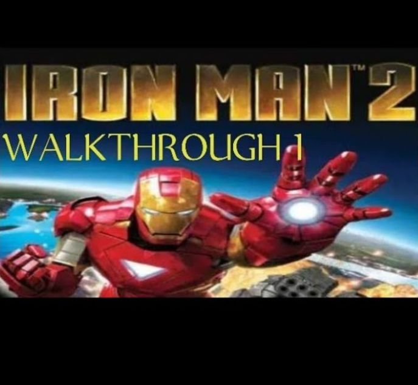
MISSION [1-4] COMPILATION - FULL WALKTHROUGH
INTRODUCTION:
Missions Included - Home Invasion, Black Gold, Breadcrumbs and Cold War.
Walkthrough 1 covers the early part of the campaign, where you’re getting used to how everything works. The game introduces flight controls, repulsor attacks, missiles, and how to manage your energy while fighting. It starts off simple, with missions focused on defending Stark property, then slowly shifts into tracking enemy activity across different areas. At first, enemies aren’t too difficult, but as you move forward, you start seeing more organized resistance like turrets and missile units.
As you go through these missions, the game encourages you to stay mobile and make use of the air instead of staying in one place. Flying gives you a better angle on enemies and helps you avoid taking too much damage from the ground. You’ll also notice that not all enemies should be treated the same—some, like turrets, need to be taken out quickly before they become a bigger problem.
By the time you reach Cold War, things start to feel more intense. There are more enemies, and they hit harder, so you have to be more careful with how you approach fights. It’s no longer just about attacking—it’s about choosing targets wisely, keeping your positioning in check, and not wasting your energy or ammo.
Overall, this section is about building a strong foundation. It teaches you how to balance movement and firepower while pushing you to think a bit more during combat. If you take your time to understand these mechanics here, it’ll make the tougher missions later on much easier to handle.
TIPS
- Destroy turrets before engaging normal enemies.
- Use missiles against grouped enemies.
- Use short bursts to conserve energy.
- Prioritize heavy enemies first.
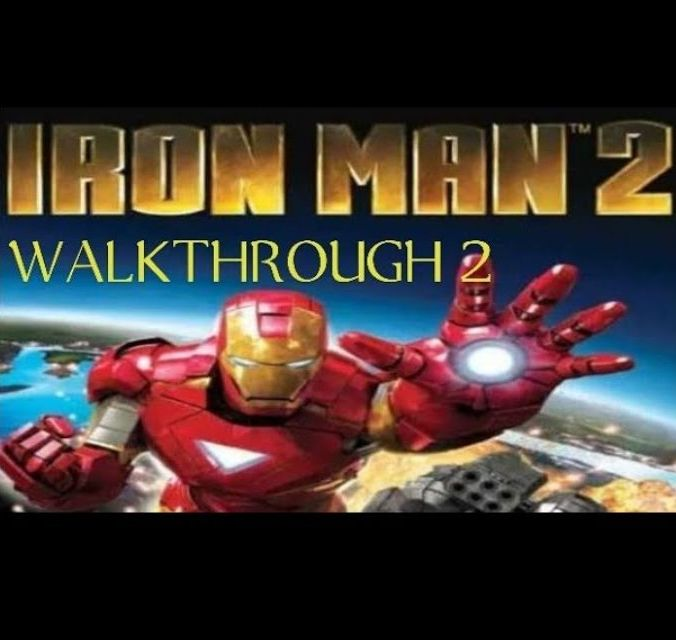
MISSION [5-8] COMPILATION - FULL WALKTHROUGH
INTRODUCTION:
Walkthrough 2 Missions Included - Tokola's Legacy, Follow the Leader, Under Siege and To The Rescue. The missions feel more varied now, with a mix of chasing targets, defending positions, and stepping in to help allies under pressure. Enemies are more organized this time, so you can’t approach fights the same way as before, you need to react faster and think about where you’re positioning yourself.
As you move through these missions, you’ll notice each one plays a little differently. Follow the Leader is more about speed and keeping up with your target, while Under Siege slows things down and forces you to hold your ground against incoming waves. Then To The Rescue adds urgency, making you act quickly to clear threats before things get out of hand.
You will also start dealing with stronger setups from enemies, like turrets and grouped units that can overwhelm you if you’re not careful. You will have to scan the area before pushing forward, clear anything blocking your path, and deal with high-threat targets early. Missiles become more useful here, especially when enemies cluster together.
Overall, this part of the game is about staying aware and adapting to different situations. You’re not just fighting anymore, you’re reacting to what’s happening around you, whether it’s chasing, defending, or stepping in to help. Getting comfortable with that balance will make the later missions a lot easier to handle.
TIPS
- Scan areas for turrets before moving forward.
- During Follow the Leader, focus on speed.
- Move quickly to protect allies in To The Rescue.
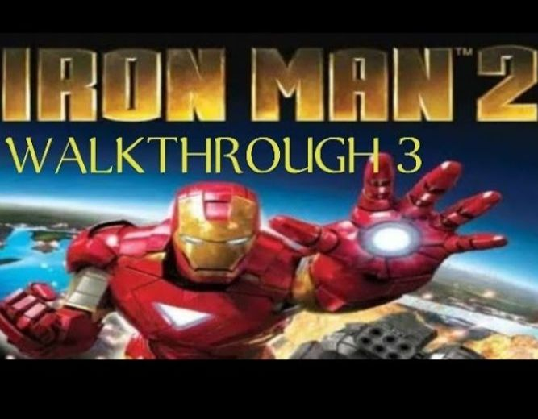
MISSION [9-12] COMPILATION - FULL WALKTHROUGH
INTRODUCTION:
Walkthrough 3 Missions Included
Live Bait, Firepower, No Safe Place and Payback.
Walkthrough 3 is where the game really starts to feel more intense. Enemies are tougher, their weapons hit harder, and fights don’t stay simple for long. You’re constantly dealing with pressure from different directions, whether it’s ambushes, fortified enemy positions, or large groups pushing you at once. The pace of combat speeds up a lot here, so staying alert becomes just as important as landing your shots.
Each mission brings a slightly different kind of challenge. Live Bait throws you into sudden ambush situations where standing still is not an option, while Firepower focuses more on dealing with heavily armed enemies and destroying stronger targets. In No Safe Place, the danger feels constant, forcing you to keep moving and avoid getting cornered.
By this stage, positioning and awareness matter a lot more than before. You can’t just push forward blindly because enemies will quickly surround or overwhelm you. Taking out distant threats early, staying mobile, and using stronger attacks like missiles on grouped enemies or vehicles becomes a key part of surviving each encounter.
The final mission, Payback, pulls everything together into one large-scale assault. It’s fast, aggressive, and tests how well you can handle pressure when everything is happening at once. If you’ve been paying attention to how each mission plays out so far, this is where all those skills get put to the test in a much more demanding environment.
TIPS
- Destroy heavy enemy weapons.
- Maintain distance from heavy units.
- Stay mobile to avoid being surrounded.
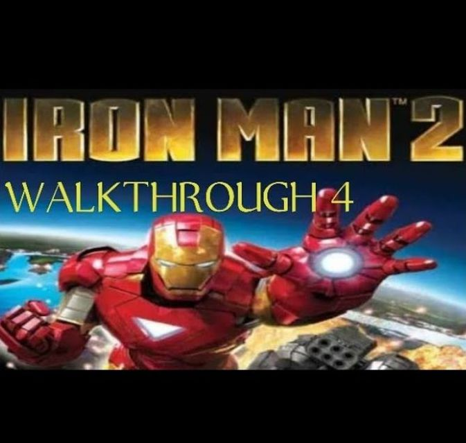
MISSION [13-16] COMPILATION - FULL WALKTHROUGH
INTRODUCTION:
Walkthrough 4
Missions Included
Mano A Mano, The Best Defense, Into the Eye and Hallowed Ground. Walkthrough 4 moves the campaign into its late-game phase, where everything becomes more intense and unforgiving. Enemies are noticeably stronger now, especially elite units that can take more damage and deal it back just as quickly. Missions also become more varied, mixing defensive holds with infiltration-style objectives where you have to push through heavily guarded areas.
At this stage, combat isn’t just about reacting quickly anymore—it’s about control. Energy management starts to matter a lot more, since wasting it can leave you vulnerable in longer fights. Positioning also becomes more important, as enemies are more aggressive and tend to pressure you from multiple angles. You’ll often need to slow down your approach and pick your moments instead of rushing forward.
Some missions focus on survival under pressure, especially when you’re dealing with waves of enemies that keep coming in. Others push you into tighter spaces where clearing out defenses is necessary before you can move forward safely. Missions like Into the Eye and Hallowed Ground especially require patience, careful movement, and knowing when to hold back or push in.
Overall, this part of the game is about discipline. You’re expected to handle stronger enemies, manage your resources better, and stay aware of threats at all times. It acts as the bridge toward the final stretch of the game, where mistakes become more costly and every encounter demands full attention.
TIPS
- Use cover when energy is low.
- Dodge frequently against elite units.
- Use missiles for high-health enemies.
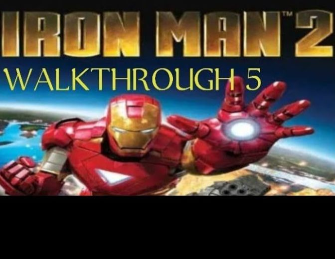
MISSION [17-20] COMPILATION - FULL WALKTHROUGH
INTRODUCTION:
Walkthrough 5
Missions Included
Chasing Ghosts, Stark's Monster, Corpus Callosum and Terminal Infection
– Final Phase of the Campaign represents the peak of the entire campaign, where difficulty is at its highest and every mission demands full focus. At this stage, you’re dealing with the most advanced enemy units in the game, along with situations that mix heavy combat, pursuit sequences, and heavily fortified zones. There’s very little room for error, so every decision in combat starts to matter more.
Each mission pushes you in a slightly different way. Chasing Ghosts focuses on tracking down elusive targets, so staying aware of objective markers and not losing direction is important. Stark’s Monster shifts into a direct confrontation with a powerful enemy unit, where you need to prioritize damage carefully while dealing with supporting threats around it.
As you move into Corpus Callosum, the game slows things down slightly but increases pressure through stronger defenses and tighter environments. You have to be more cautious here, clearing areas properly before advancing instead of rushing through. Then everything builds toward Terminal Infection, which serves as the final mission and brings the most intense combat of the game.
The final mission tests everything you’ve learned so far—movement, energy control, targeting priority, and survival under constant pressure. Staying mobile is essential, as standing still for too long quickly leads to heavy damage. By the end of this walkthrough, the campaign pushes you into a full-scale final battle that concludes the story in a high-intensity finish.
TIPS
- Avoid unnecessary damage before final mission.
- Destroy powerful enemy units.
- Move cautiously through Corpus Callosum due to heavy defenses.
- In Terminal Infection, conserve energy for final combat.
THE GOD-FATHER MOBWARS

THE GODFATHER: MOBWARS is a crime strategy and action game that immerses players in the world of organized crime inspired by the classic Godfather universe. The game focuses on building and expanding your own criminal empire by completing missions, taking over territories, and managing resources within the mob hierarchy. Players rise through the ranks by carrying out gang operations, strategic attacks, and family-based alliances, all while competing against rival gangs for control. MobWars delivers a mix of strategic planning and action-driven missions where every decision affects your rise in the criminal underworld.
VIEW FULL WALKTHROUGH 🎮
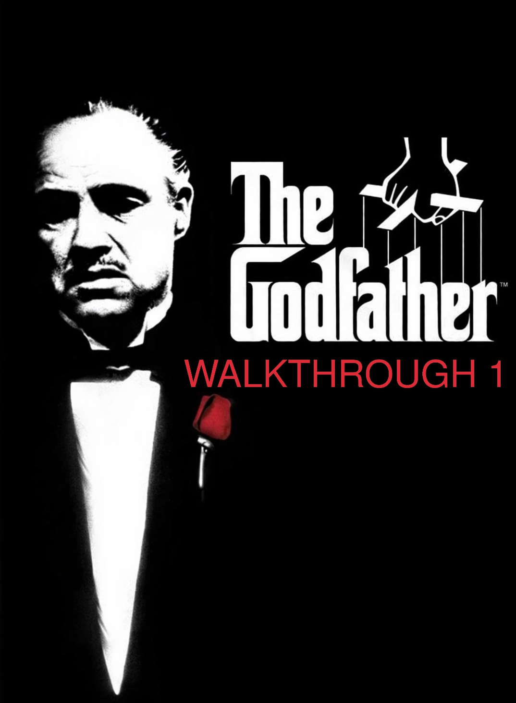
MISSION [1-5] COMPILATION - FULL WALKTHROUGH
INTRODUCTION:
The opening set of missions — Prologue, The Alley, Grave Situation, and The Son Is Dead — acts as your introduction to the world of The Godfather: MobWars and the life you’re stepping into. This early phase isn’t just about completing objectives; it’s about understanding how everything works, from movement and combat to how the Corleone family operates within the larger criminal world.
At the beginning, the gameplay is fairly straightforward, giving you room to get used to basic controls and the overall flow of missions. Most encounters happen at close range, so you start developing a feel for gunplay and how to react under pressure. Even though the difficulty is lower compared to later stages, the game subtly encourages you to build good habits early. Things like using cover properly, staying aware of your surroundings, and not exposing yourself unnecessarily become important very quickly.
As you move through these missions, you’ll notice a gradual shift in intensity. What starts as simple tasks begins to feel more like real operations, with enemies becoming slightly more coordinated and fights lasting longer. By the time you reach The Son Is Dead, the game is already testing whether you’ve been paying attention. You’ll face more resistance, and situations won’t be as forgiving if you rush in without thinking.
Ammo management also starts to matter more than it seems at first. You can’t afford to waste shots, so being precise with your aim becomes part of your survival. Taking your time to line up shots and making each one count will carry you through tougher moments, especially when resources are limited.
Overall, this first walkthrough segment is about building a solid foundation. It eases you into the mechanics while quietly preparing you for the more demanding missions ahead, where the stakes get higher and the margin for error becomes much smaller.
TIPS
- Always reload after every fight.
- Pick up dropped weapons to save ammo.
MISSION [6-10] COMPILATION - FULL WALKTHROUGH
INTRODUCTION:
The second set of missions — Intensive Care, Fireworks, Death to the Traitor, and Horseplay — marks a clear step up from the early stages of The Godfather: MobWars. At this point, you’re no longer just learning the basics; you’re being trusted with more important responsibilities within the Corleone family. The objectives become more varied, ranging from protecting key individuals to carrying out precise eliminations, and even navigating situations where the environment itself becomes a threat.
Combat also starts to feel more demanding. Enemies are more aggressive and don’t just come at you head-on anymore—they appear from different directions, forcing you to stay alert at all times. Moving carelessly through an area can quickly get you surrounded, so awareness becomes just as important as accuracy. You begin to realize that every step forward needs to be more controlled and deliberate.
Certain missions introduce new layers to how you approach fights. In Fireworks, explosive elements change the way you position yourself, as one wrong move can put you in serious danger. Death to the Traitor leans more toward patience, rewarding players who take their time to pick targets and move carefully rather than charging in. Horseplay, on the other hand, blends movement with combat, keeping you on edge with the possibility of sudden ambushes.
This phase pushes you to think beyond basic shooting. It’s about adapting to different situations, reading the environment, and making smarter decisions in the middle of combat. By the end of these missions, you’re expected to play with more control and awareness, showing that you’re ready to handle the increasing pressure that comes with rising through the family ranks.
TIPS
- Shoot explosive objects only from a safe distance.
- Check minimap frequently for enemy positions.
- Stay patient, rushing often leads to ambushes.
MISSION [11-15] COMPILATION - FULL WALKTHROUGH
INTRODUCTION:
The third set of missions — A Recipe for Revenge, Now It’s Personal, The Silent Witness, and Sonny’s War — is where things really start to heat up. You can feel the shift almost immediately, as fights become bigger, louder, and a lot less forgiving. It’s no longer just small encounters here and there—you’re stepping into full-on battles with more enemies coming at you at once.
Combat in this phase tends to drag on longer, so you have to stay focused the entire time. There’s less room for mistakes now, especially in missions like Now It’s Personal and Sonny’s War, where you’re constantly under pressure. You can’t just run into fights and expect to get through them—you have to slow things down a bit, use cover properly, and pick your moments to move or shoot.
The Silent Witness changes things up by adding a protection element, which forces you to think beyond just taking enemies down. You have to keep an eye on what’s happening around you, making sure you’re not leaving anything exposed while still holding your ground in combat. It adds a bit of tension because you’re juggling more than one priority at once.
By this point, the game expects you to be more comfortable with everything you’ve learned so far. Weapon choice, positioning, and awareness all start to matter more, especially with enemies coming in waves. It’s a noticeable jump in intensity, and how you handle these missions says a lot about how ready you are for what’s coming next.
TIPS
- Never stay exposed for too long.
- Use vehicles and objects as cover during intense fights.
MISSION [16-20] COMPILATION - FULL WALKTHROUGH
INTRODUCTION:
The last set of missions — Chance of Plans, Order to Kill, It’s Only Business, and Baptism by Fire — is where everything comes together. This is the final stretch, and you can feel the difference right away. Missions are longer, enemies hit harder, and you can’t rely on brute force anymore. You have to be more calculated with how you move and fight.
A lot of the combat takes place in tighter spaces, especially indoors, which makes every encounter feel more intense. There’s less room to move around, so positioning becomes even more important. Enemies don’t give you much breathing space either, so you have to stay sharp and avoid getting pinned down.
Each mission brings its own kind of pressure. Order to Kill is more focused, pushing you to stay locked in on your main objective without getting distracted. It’s Only Business mixes things up by making you think about control and timing, not just shooting your way through. You have to balance aggression with patience to stay in control of the situation.
Then it all leads into Baptism by Fire, which feels like a final test. The combat is intense, and it pushes you to use everything you’ve picked up along the way—how you use cover, how you manage your ammo, and how patient you are under pressure. It’s a tough finish, but it wraps up the whole experience in a way that really shows how far you’ve come.
TIPS
- Keep your strongest weapons for final encounters.
- Stay behind cover and advance cautiously.
- Move slowly and clear areas before advancing.